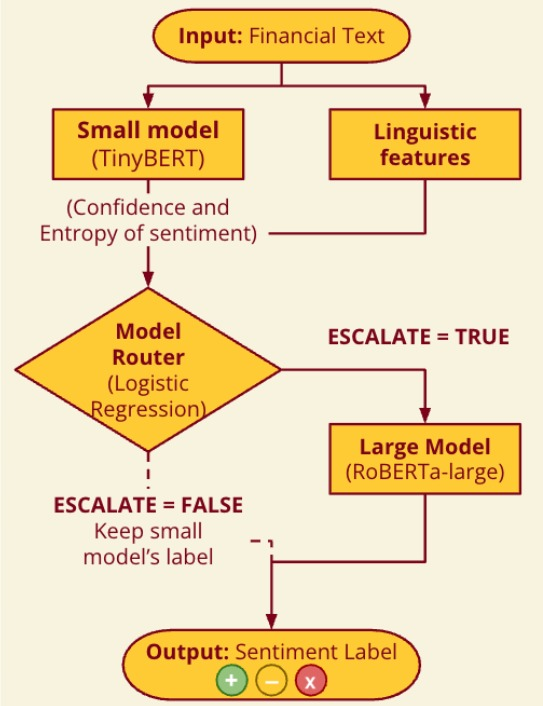

Abstract
Financial institutions increasingly rely on natural language processing (NLP) systems to analyze large volumes of financial text such as earnings calls, disclosures, analyst reports, and financial news. While large transformer models achieve strong sentiment classification performance, deploying them for every input is computationally expensive. Smaller models are faster and cheaper, but they often struggle with linguistically complex financial text containing hedging, negation, implicit sentiment, and domain-specific terminology.
Motivation:
The objective of this project is to design a routing framework for financial sentiment analysis that balances predictive performance with computational efficiency. Instead of relying entirely on a computationally expensive large model, the system selectively escalates only difficult financial inputs while allowing simpler inputs to be processed by a lightweight model.
Approach:
We combined and cleaned multiple financial sentiment datasets (Financial PhraseBank, and
Financial Tweets Sentiment
from Hugging Face), extracted linguistic complexity features from each sample, and fine-tuned both a small model (TinyBERT-4L-312D) and a large model (RoBERTa-large) for 3-class financial sentiment classification. We then extracted uncertainty signals from the small model, including confidence, entropy, and probability margins, and combined them with extracted linguistic features. These features were used to train a lightweight logistic regression router that determines whether an input should remain with the small model or be escalated to the large model.
Model Router Flow Chart
The diagram below illustrates the routing flow: each input is first
processed by the small model (TinyBERT). The router then examines
the small model's confidence and the input's linguistic features to
decide whether to accept the small model's prediction or escalate to
the large model (RoBERTa-large).

Introduction / Background / Motivation
What did you try to do? What problem did you try to solve? Articulate
your objectives using absolutely no jargon.
A task that financial institutions often need to execute is to determine
whether text such as news articles, earnings calls, and financial
reports carry a positive, negative, or neutral message. Big, powerful AI
models do this well but are slow and expensive to run on thousands of
documents. Small, cheap models are fast but can make more mistakes
on difficult sentences. Our goal was to create a router that, after processing input through the smaller model, determines whether the text should be escalated to the larger model. This decision is made by balancing cost and performance using the small model’s confidence score and linguistic features (e.g., average word length, presence of negation terms like "not", etc.).
How is it done today, and what are the limits of current practice?
Today, most sentiment systems rely on a single model applied to all
inputs. Either a small, cheaper model that sacrifices accuracy, or a
larger, expensive model that is impractical at scale.
More recent work has explored routing between models. Hybrid LLM
frameworks like the one proposed by Ding et al. show that selectively
sending inputs to a larger model, rather than always using it, can
preserve quality while cutting cost. However, these systems route based
purely on model confidence, without considering anything about the
language itself.
In the financial domain, HSMoE-FSA uses entropy-based routing across 15
parallel expert models. Instead of optimizing for cost-savings and
accuracy, the system purely optimizes for accuracy. Instead of running
one model, it runs all models at the same time and fuses the
outputs.
A common thread across existing systems is they do not examine
why a statement is difficult to classify, nor do they
incorporate linguistic properties of the input. We aim to address these
gaps by using hedging language, negation, and syntactic complexity as
signals for routing.
Who cares? If you are successful, what difference will it make?
This domain-specific model router is naturally applicable to financial
firms or any organization seeking to perform financial sentiment
analysis at scale both accurately and efficiently. A successful router
would allow practitioners to obtain near-large-model accuracy at a
fraction of the cost, making high-quality sentiment analysis accessible
even under tight computational budgets.
Approach
What did you do exactly? How did you solve the problem? Why did you
think it would be successful? Is anything new in your approach?
Our system was built in various stages as reflected in the list below.
Phase 1: Dataset Preparation & Exploration -
Complete
Phase 2: Linguistic Feature Extraction -
Complete
-
The linguistic features extracted for each samples were token count,
character count, average word length, syntactic dependency tree depth,
clause count, count of negation tokens, density of negation tokens,
count of hedging terms, density of hedging terms, named entity count,
entity density, financial term count, readability score (Flesch
reading ease from textstat), reading grade level (Flesch Kincaid grade
from textstat), and passive voice count.
-
This list might be further narrowed down as input for the router
(e.g., filtering out features with variance < 1%)
Phase 3: Small Model Finetuning - Complete
-
Established baseline performance using
TinyBERT-4L-312D for 3-class financial sentiment classification on the combined test set and
ProsusAI/finbert (pre-trained financial sentiment model)
on both the PhraseBank-only and combined test sets.
-
Fine-tuned
TinyBERT with a 3-class classification head using the HuggingFace Trainer framework
(learning rate = 2e-5, batch size = 16, max epochs = 5, weight decay = 0.01,
warmup ratio = 0.1, early stopping patience = 2).
The best checkpoint was selected using validation macro-F1.
-
Evaluated model performance using accuracy, weighted F1-score, confusion matrices,
and per-class classification reports.
-
Saved per-example predictions (label, class probabilities,
confidence, entropy, margin) for downstream error analysis and
router training.
-
Confusion matrices and per-class reports:
figures found here
Phase 4: Large Model Finetuning - Complete
- Established large-model baseline by evaluating zero-shot
roberta-large-mnli on both the PhraseBank-only and combined test sets.
- Fine-tuned
roberta-large with a 3-class classification head on the PhraseBank split and the combined dataset using HuggingFace Trainer.
- Tested the PhraseBank-trained RoBERTa-large on the combined test set to measure cross-dataset generalization and observed a substantial domain-shift drop in performance (accuracy = 0.5358, macro-F1 = 0.5388).
- Fine-tuned RoBERTa-large directly on the combined dataset, achieving validation accuracy 0.8735 (macro-F1 0.8657) and test accuracy 0.8764 (macro-F1 0.8697).
- Saved per-example predictions, class probabilities, confidence, entropy, and margin for downstream comparison with the small model and future router training.
- Confusion matrices and per-class reports:
figures found here
Phase 5: Router Feature Construction & Error Analysis - Complete
- Compared small-model and large-model predictions to identify where escalation was useful.
- Created oracle escalation labels: a sample was marked for escalation when RoBERTa-large was correct and TinyBERT was incorrect.
- Extracted uncertainty signals from the small model: confidence, entropy, and probability margin.
- Combined these uncertainty signals with linguistic features such as token count, character count, clause count, dependency depth, negation count, hedge count, readability, and passive voice count.
- Used these features to build a 17-dimensional router input vector.
Phase 6: Router Training & Evaluation - Complete
- Trained a lightweight
logistic regression router to decide whether each input should remain with TinyBERT or be escalated to RoBERTa-large.
- Evaluated the router against small-only, large-only, and oracle upper-bound baselines.
- The router achieved 0.860 accuracy and 0.860 weighted F1 while using the large model only 33.7% of the time.
- Compared to always using RoBERTa-large, the router reduced computational cost by 63.7%.
- Final router plots and analysis can be found on the router results page.
What problems did you anticipate? What problems did you encounter?
Did the very first thing you tried work?
The dataset we originally intended to use was Financial PhraseBank in
isolation. We suspected that it might be too small, and this was
confirmed when we fine-tuned TinyBert on the dataset and achieved
94.02% accuracy on the test set, which left little room for
improvement with RoBERTa-large. To mitigate this, we found another
dataset, Financial Tweets Sentiment, which combines other reputable
financial sentiment datasets for a total of ~41k samples. On this
combined dataset, the fine-tuned TinyBert achieves 82.79% accuracy,
providing a meaningful gap for the large model and router to close.
We also observed that a RoBERTa‑large model trained only on PhraseBank failed to generalize to the combined dataset, achieving just 53.58% accuracy on the combined test set. This confirmed that the expanded corpus introduces a substantial domain shift and motivated us to train the large model directly on the combined data.
Results
How did you measure success? What experiments were used? What were the results, both quantitative and qualitative? Did you succeed? Did you fail? Why?
We measured success by evaluating whether the router could improve over the small model while reducing the cost of always using the large model. The main experiments compared four strategies: Small Only, Large Only, Router, and Oracle Upper Bound. We used accuracy, weighted F1-score, large-model usage, average computational cost, and cost reduction as evaluation metrics.
Small-Model Baselines — PhraseBank Only (test, n = 518)
| Model |
Accuracy |
Macro-F1 |
| DistilBERT zero-shot |
0.2239 |
0.1732 |
| FinBERT zero-shot |
0.9459 |
0.9346 |
|
DistilBERT fine-tuned
|
0.9402 |
0.9206 |
Table 1. Small-Model Baselines — PhraseBank Only
Small-Model Baselines — Combined Dataset (test, n = 6,223)
| Model |
Accuracy |
Macro-F1 |
| TinyBERT zero-shot |
0.4504 |
0.2458 |
| FinBERT zero-shot |
0.5015 |
0.4950 |
|
TinyBERT fine-tuned
|
0.7964 |
0.7862 |
Table 2. Small-Model Baselines — Combined Dataset
Detailed confusion matrices and per-class classification reports for
all of the above experiments (both datasets, validation and test splits)
can be found on the
small model results page.
Large-Model Results — PhraseBank Only (test, n = 518) — Combined Dataset (test, n = 6,223)
| Model |
Accuracy |
Macro-F1 |
| Roberta-large-mnli zero-shot (PhraseBank) |
0.5792 |
0.5825 |
| Roberta-large-mnli zero-shot (Combined) |
0.5751 |
0.5376 |
|
RoBERTa-large fine-tuned (PhraseBank)
|
0.9614 |
0.9446 |
|
RoBERTa-large fine-tuned (Combined)
|
0.8764 |
0.8697 |
Table 2. Large-Model Results
Detailed confusion matrices and per-class classification reports for
all large-model experiments (across both datasets and splits)
can be found on the
large model results page
.
Router Experiment Results
| Strategy |
Accuracy |
Weighted F1 |
Large Model Usage |
Average Cost |
Cost Reduction |
| Small Only (TinyBERT) |
0.796 |
0.797 |
0% |
1.00 |
96.0% |
| Large Only (RoBERTa-large) |
0.876 |
0.876 |
100% |
25.00 |
0.0% |
| Linguistically-Aware Router (Logistic) |
0.860 |
0.860 |
33.7% |
9.08 |
63.7% |
| Oracle Upper Bound |
0.920 |
0.920 |
12.3% |
3.96 |
84.2% |
Table 3. Router Experiment Results (combined test set)
Detailed router plots and analysis are available on the
router results page.
Results Analysis
Quantitatively, the small model achieved 0.796 accuracy with the lowest cost. The large model achieved the highest standalone performance with 0.876 accuracy, but required using the large model for every input. Our router achieved 0.860 accuracy while using the large model only 33.7% of the time, reducing cost by 63.7% compared to always using the large model. The oracle upper bound reached 0.920 accuracy, showing that better routing decisions could still improve performance.
Qualitatively, the router succeeded in balancing accuracy and efficiency. Feature analysis showed that both uncertainty signals and linguistic features influenced escalation decisions. Character count, token count, readability, clause structure, syntactic depth, and entropy helped identify inputs that were more likely to need escalation.
Overall, the router achieves performance close to the large model while using RoBERTa-large for only about one-third of the test inputs.
This shows that linguistically-aware routing can retain most of the large model’s performance while significantly reducing computational cost.
Limitations
The performance of this system is severely limited by the datasets used.
During linguistic feature extraction, many features indicated the sentences
were simple, and lacked the linguistic characteristics that were examined.
This lack of complexity explains why there is a minimal gap in the small
and large model’s performance, and the small model already has a relatively
high accuracy on the dataset.
Conclusion and Future Work
In this project, we developed a linguistically-aware routing framework for financial sentiment analysis that balances predictive performance and computational efficiency. Our results showed that the logistic regression router successfully combined uncertainty signals and linguistic complexity features to decide when inputs should be escalated from TinyBERT to RoBERTa-large.
Overall, this work demonstrates that linguistically-aware routing can serve as an effective strategy for balancing predictive performance and computational efficiency in financial NLP systems. Future work could explore more complex financial documents, additional model architectures, calibrated uncertainty estimation, and multi-model routing strategies for further performance improvements.